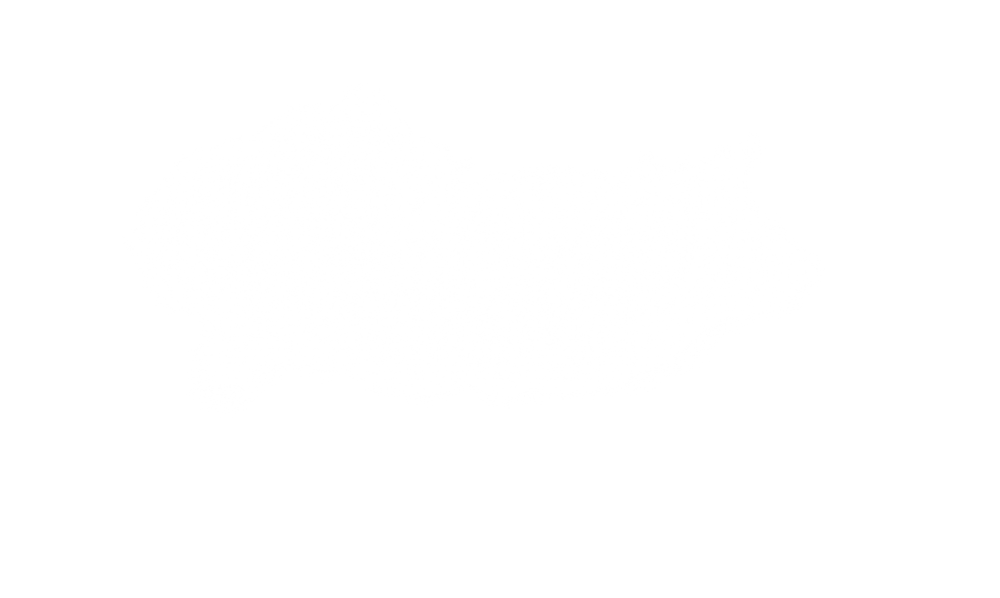

Lieblingsband
Leicht und sicher
Mit meinem Laufband von Nike behalte ich beim Training immer die Kontrolle.

Ich war nie besonders sportlich. Ich begann mit dem Laufen, weil ich einen Ausgleich zu meinem stressigen Alltag suchte. Anfangs wollte ich nur meinen Kopf frei bekommen, doch mit jedem Schritt merkte ich, wie gut mir die Bewegung tat. Die frische Luft, das Gefühl von Fortschritt und kleine persönliche Erfolge motivierten mich weiterzumachen. Heute laufe ich, um mich stark, frei und lebendig zu fühlen.
Der Moment, wenn der Alltag leiser wird. Jeder Schritt ist ein Schritt nach vorn. Was ich besonders liebe, ist die Freiheit, die Intensität selbst zu bestimmen – ob ich sprinten möchte oder einen steileren Weg nehme, ich entscheide.
Und besonders nach jedem Lauf dieses Gefühl: „Ich habe es wieder geschafft.“ Ein Gefühl, das ich nicht mehr missen möchte. Jeder Lauf wird so zu einem kleinen Sieg über die eigene Trägheit.
Am liebsten laufe ich am späten Nachmittag direkt bei mir durch die Stadt. Es gibt so viel zu sehen – Architektur, lebendige Parks oder die unterschiedlichsten Menschen in ihrem Alltagstrott. Wenn alles geschafft ist, die Sonne langsam untergeht und der Tag sich dem Ende neigt, gebe ich für heute noch ein letztes Mal alles.
Mit der Vorbereitung auf den Halbmarathon verfolge ich ein klares Ziel: Konstanz in meinen Alltag zu bringen. Das Training ist mein fester Anker in einer hektischen Woche. Mein Ziel ist es, eine körperliche und mentale Fitness zu erreichen, die mich nicht nur über die 21 Kilometer trägt, sondern mir auch langfristig Energie und Ausgleich schenkt. Der Wettkampf ist die Krönung.